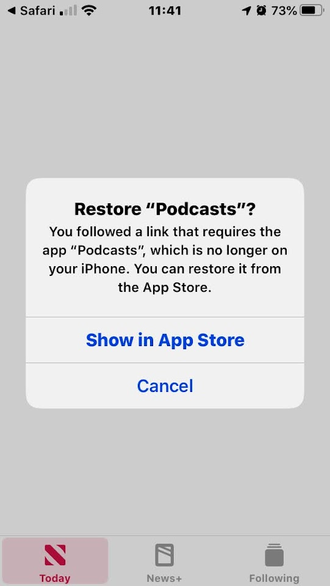

Greetings, friends. I hope this may be helpful to someone in helping to figure out how to use podcasts. It is not complete, but hopefully enough to help some get started and listen to Drsya's podcast at least, as podcasts are a very nice way of distributing and listening to audio content, and are a very nice fit to hearing transcendental topics. : )
See at the end for information on some other podcasts that might be interesting.
If there are any questions or something further you thing I should add or clarify, let me know, and I will endeavor to help. -- aaron üôè
Table of Contents
First, you must have a podcast player installed. Sometimes these are called "podcast clients" or "podcatchers". It is just a program that lets you download and play the podcasts. There are many of them and most of them are free.
Note: about "subscribing" (to a podcast)
When you add a podcast to your list in a podcast app, it's usually called "subscribing". Don't worry! This is not a "subscription" that will cost you money ... in the world of podcast apps, "subscribing" to a podcast just means adding it to your list of podcasts in the app, so that you can see when new episodes are added, and optionally have them automatically downloaded, etc (depending on your settings.)
The basic process is this:
Here is the basic process on an iPhone:
If you don't have Apple Podcasts installed, you will get an error message, probably similar to this:

So, the easiest thing to do is probably just install Apple Podcasts. (There are other apps I like better, but Apple Podcasts works well enough to start with.)
Click the button that says "Show in App Store", if you have one; if not, go to the App Store, and search for "Apple Podcasts". The correct one should look something like this:
Now that you have Apple Podcasts installed, try clicking the link again, and the following should happen ...
If you do have Apple Podcasts installed, you will get a screen like this, offering to "subscribe" (add) the podcast:
So, let's try clicking (tapping) on that podcast feed URL again now, shall we? And then, let's go ahead and hit "subscribe." Here it is:
https://feeds.soundcloud.com/users/soundcloud:users:575866935/sounds.rss
Once you have "subscribed" to the podcast, you can then click on the "Library" tab on the bottom to find it ...
Once you click into the show, you may need to scroll down to the bottom of the episodes list to the button that says "See All Episodes" to show all the earlier episodes:
You can tap and hold (long press) on any episode (or the "cloud" icon next to any episode) to bring up a menu of options to download the episode, enqueue it, or do other things
Here is a more detailed guide to using Apple podcasts, in case it's helpful (there are quite a few settings and features regarding downloading/keeping the podcast files, etc): https://support.apple.com/en-us/HT201859
Here are some that I've used: